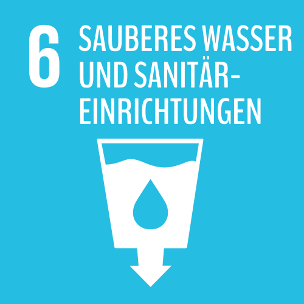

Ohne Wasser kein Leben! Wir benötigen es als Trinkwasser, aber auch in der Landwirtschaft, um Nahrungsmittel zu produzieren. Die Vereinten Nationen haben daher 2008 den Zugang zu sauberem Trinkwasser als Menschenrecht anerkannt. Dennoch müssen 748 Millionen Menschen noch immer ohne sauberes Trinkwasser auskommen. Nach Schätzungen sterben deswegen an einem einzigen Tag weltweit 5.000 Kinder. 2,5 Milliarden Menschen haben keinen Zugang zu sanitärer Grundversorgung.
„Wir erreichen alle Entwicklungsziele nur, wenn wir verstehen, wie Wasser als global begrenzte Ressource mit den anderen Zielen verbunden ist.“
(Stefan Reuter, Geschäftsführer des BORDA e.V.)
